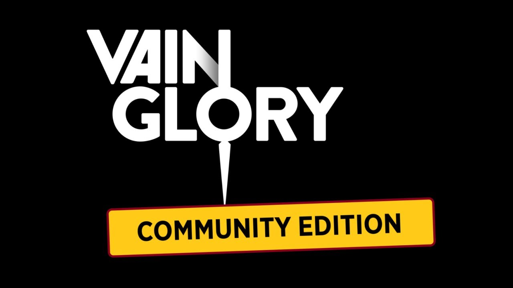
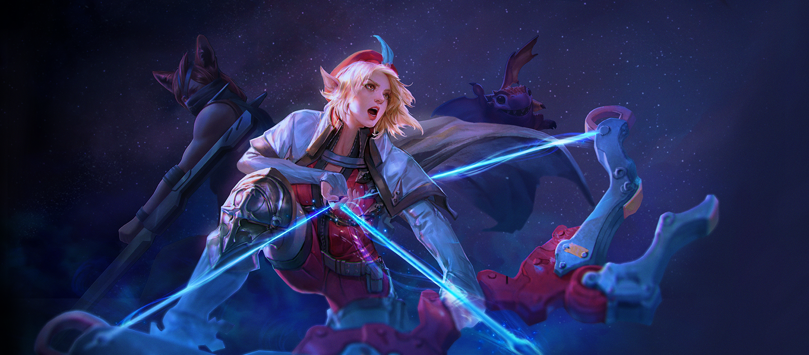

|
1 DE ABRIL DEL 2020  Rogue recientemente hizo un llamado para cerrar los servidores de Vainglory. En los últimos días los desarrolladores del juego han estado luchando para tener una mejor solución para el juego y la base de jugadores que continúan brindando su apoyo a Vainglory. Se prentende tomar como la mejor opción poner el futuro de Vainglory (fuera de China) en manos de la comunidad en diferentes entornos y servidores. partidarios que son aficionados del juego desde sus inicios. Se incluye un resumen para respaldar los planes y expectativas descritos en el anuncio, los mismos que se pueden encontrar detallados en el siguiente enlace. El objetivo es darle una idea de hacia dónde se esta dirigiendo el futuro de Vainglory en los próximos días y semanas, esto a través de etapas que dan inicio por la descomposición de cuentas y servidores hasta una progresiva restauración donde cada una de las funcionalidades y modalidades de juego se irán implementando nuevamente conforme el tiempo. |
|
24 DE ABRIL DEL 2020  El equipo de SEMC siempre ha estado asombrado por los increíbles artistas fanáticos que han puesto energía en la creación de obras de arte en Vainglory. En el pasado, se han realizado una serie de eventos de fan art que permitieron mostrar parte del trabajo ya realizado e incluso proporcionar recompensas virtuales a algunos de los mejores diseñadores. En el espíritu de cambiar Vainglory: CE en manos de la comunidad, se busca llevar este evento de arte un paso más allá e incorporar las piezas ganadoras directamente en la aplicación CE. Se necesita actualizar elementos de la aplicación tales como el logotipo/icono de la aplicación para representar el cambio enfocado a la comunidad y de igual forma el arte de la pantalla de inicio del juego. Como fecha límite de envío de diseños se tiene hasta el 15 de mayo a través de la plataforma de Twiter (indicaciones y especificaciones de diseños sobre esta temática se encuentra disponible en el enlace LEER MAS... de esta sección). |